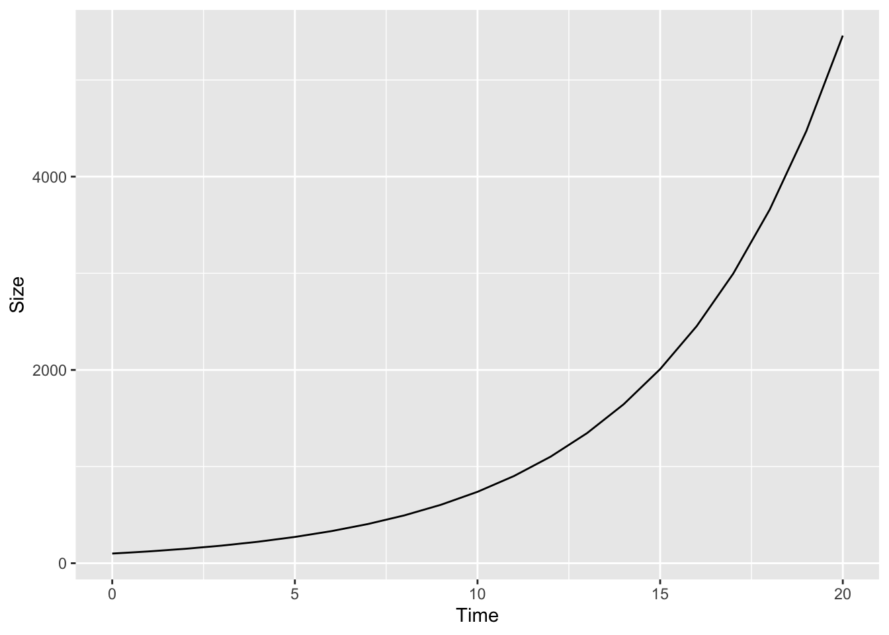
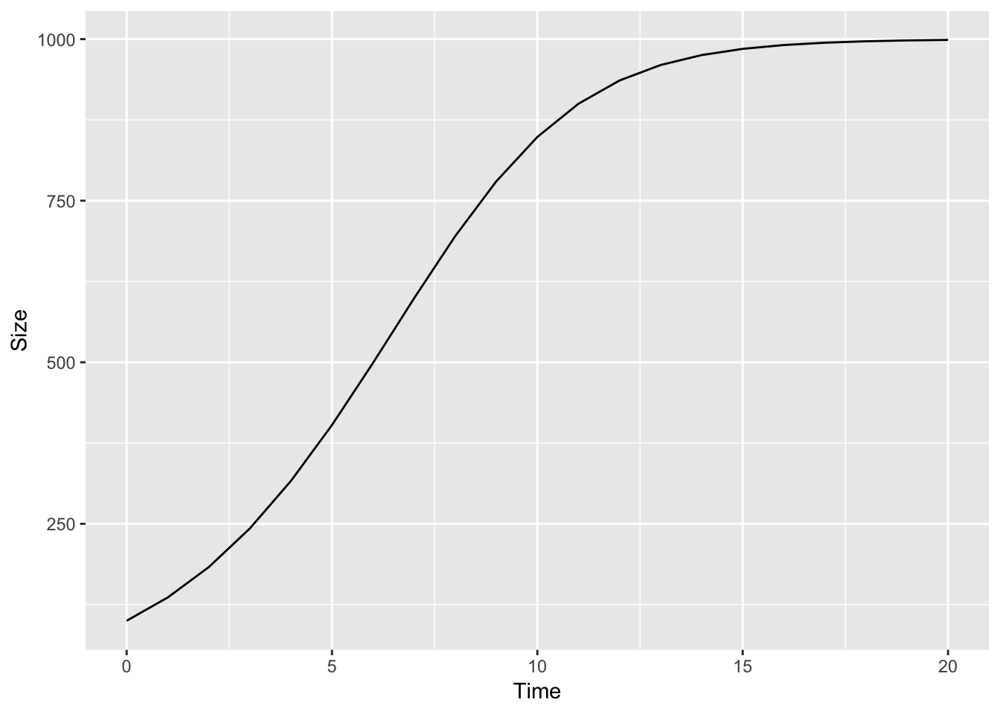

Problem Set 11 Cancer
11.1 Numerical Self-Discovery
Students in Biology are inundated with equations both from Biology classes and from classes such as Physics and Chemistry. For most of us, these equations are pretty hard to really understand, even if we can do the math. By “understand”, I mean, to treat the equation as a function, with inputs (the parameters) and outputs (what the function equates to given the parameters) and to have a picture in one’s head of how this function behaves. By “behave”, I mean what the function looks like and how “what it looks like” depends on the parameters. A spreadsheet is a terrific way to self-discover the behavior of a function (A scripting language like R is even better). This worksheet is a step-by-step guide on how to do this. The skills learned here should be transferable to any function, although a spreadsheet might not be the perfect tool for more complex functions.
The major feature of a tumor is the abnormal growth of the tumorogenic cell population. Physiologists are interested in the dynamics of tumor cell growth, which means how the cell population (or a proxy such as tumor volume) increases in size over time. How the growth occurs can give insights into the mechanisms driving the growth.
The beginning of tumor growth, when there are few cells, will probably be approximately exponential, which looks like this.

Exponential growth cannot continue for long. A growth model that might better describe the longer term growth of a tumor is the logistic model, which looks something like this

The logistic model is
\[\begin{equation} \frac{\Delta N}{\Delta T} = rN(\frac{K-N}{K}) \end{equation}\]Here we aren’t concerned with deriving the logistic equation or with the assumptions of using this function to model tumor growth. We are concerned only with how to explore the behavior of the function itself. I’ll leave derivation and assumptions to other worksheets.
You see this function in your textbook or on the blackboard. How do you use a spreadsheet to self-discover? That is, how do you get the equation into a spreadsheet? First, what is all the stuff in the equation? The parameters are \(r\) (the “intrinsic” growth rate), \(N\) (population size, that is the number of cells), and \(K\) (the maximum size of the tumor that can be sustained. This is sometimes called the “carrying capacity”). \(r\), \(N\), and \(k\) are on the right hand side (rhs) of the equal sign and variables on the rhs are the inputs to the function. The left hand side (lhs) of the equation is the output. The output is just a single number but there are three things on the lhs, \(\Delta\), \(N\) (population size, again), and \(T\) (time). The \(\Delta\) is not a variable it is a symbol meaning “change in” and used to specify how one variable changes given change in another variable. So \(\frac{\Delta N}{\Delta T}\), which is read as “delta en over delta tee” is the change in population size over time. The unit of time (minutes, days, generations) isn’t specified and doesn’t matter here.
To explore how the rate of population growth changes over time, We want to create a plot with \(N\) on the \(y\)-axis and \(Time\) on the \(x\)-axis. The rate is then the tangent to the curve for any time, \(T\). In order to do this, we need to find the solution to the equation by solving for \(N\). First, remembering that
\[\begin{equation} \frac{\Delta N}{\Delta T} = N_{t+1} - N_t \end{equation}\] so substitute this in on the lhs \[\begin{equation} N_{t+1} - N_t = rN_t(\frac{K-N_t}{K}) \end{equation}\] and re-arrange … \[\begin{equation} N_{t+1} = N_t + rN_t(\frac{K-N_t}{K}) \tag{11.1} \end{equation}\]Equation (11.1) is function we can work with in a spreadsheet! So open your Google Sheet project and…
11.1.1 Step 1
Figure 11.1: Step 1: Set up the header row of parameter labels
First set up a row of column labels containing all the variables that we care about (Fig 11.1). This includes a column \(T\) for \(Time\) that is not explicitly on the rhs but is there implicitly!
11.1.2 Step 2
Figure 11.2: Step 2: Initialize \(T\) and \(N\) and parameterize \(r\) and \(K\)
Now add an initial value for \(T\) and \(N\) and some value for the parameters \(r\) and \(K\) (Fig 11.2). I inserted “1” for \(T\), “100” for \(N\), “.5” for \(r\) and “500” for \(K\). Don’t worry about the values you insert because the beauty of using a spreadsheet for self-discovery is that you change these later!
11.1.3 Step 3
Figure 11.3: Step 3: Add a formula to generate a column of \(T\) values
Now you need to add some formula to the spreadsheet. Google sheets or MS Excel recognize a formula of the text you enter starts with “=”. The first formula you want to enter is for \(T\) and you want to enter this in the cell immediately below the initial value for \(T\) (Fig 11.3). If you’ve followed how I’ve input the header row and intial value row, then the formula goes into cell A3. As you type, the formula appears in the formula editor. Type “=” then either type “A2” (referring to the cell containing \(T-1\) or simply click in cell A2, which inserts “A2” into the formula editor. Then click back into the formula editor and added “+1” then hit “return”.
11.1.4 Step 4
Figure 11.4: Step 4: Add the formula for \(N\). This is step is the key step and the whole focus of the activity
Now you need to enter a formula for “N” in cell B3 (Fig 11.4). This formula is of course the function that we’re focusing on (Equation (11.1)). The key is knowing how to translate a formula in the form you see it written in a textbook to a spreadsheet formula. In a textbook, you see \(rN\) for the product of \(r\) and \(N\) but if you type “=rN” into a spreadsheet you’ll get an error because it doesn’t know what \(r\), \(N\) or \(rN\) is. So instead of entering “r” you need to type in the cell that contains \(r\), and instead of “N” you need to type in the cell that contains \(N\) and finally you need to tell the spreadsheet to multiply the values of the two cells (\(r\) and \(N\)) using the product symbol ““. So the \(rN\) part of the function is entered into the spreadsheet as”=C2B2”. Hopefully the rest of the formula makes sense.
11.1.5 Step 5
Figure 11.5: Step 5: Make the reference to the cells containing the values for \(r\) and \(K\) constant using the dollar sign
The next step is a spreadsheet power tip. You want to compute \(N\) for many values of \(T\). You could just keep re-typing in the formula but the more efficient method is to simply copy the formula down. The formula in row 3 refers to the values of cells in row 2. When a formula is copied from row 3 to row 4, all the row referents in the formula are increased by 1, so now the formula in row 4 refers to cells in row 3. This is beautiful. Except when it isn’t. Some parts of the formula that you entered in cell B3 are “constant”, that is we do not want these to “move down” with the formula. So to keep the row constant, simply add a dollar sign in front of the number (=row) part of the cell address (Fig 11.5). For example, \(r\), in cell C2 is a constant, so you need to add a dollar sign in front of the 2 in “C2”. The paramter \(K\) (cell D2) is also a constant so any part of the formula that refers to D2 should be kept constant by adding a dollar sign in front of the 2 in “D2”. Sweet!
11.1.6 Step 6
Figure 11.6: Step 6: Highlight then click-and-drag the little box in the bottom-right corner to copy the formula down
Now, the formula is ready to copy “down”. This can be done several ways. The way I usually do it is by highlighting the cells that I want to copy down and click-and-drag (down) the bold little square in the bottom right corner of the bounding box of the highlighted cells (Fig 11.6). Bam! You should have multiple rows with \(T\) increasing from 1 to however many rows you copied the formula and Values of \(N\) for each value of \(T\).
11.1.7 Step 7
Figure 11.7: Step 7: Make a figure
Now just plot the data. Click-and-drag to highlight the columns T and N including the labels “T” and “N”. Now choose the menu “Insert” and the item “Chart”. A default chart might appear. In the chart editor window, click on chart type and click on the Line Chart with the smooth lines (this is the chart icon highlighted in Fig 11.7 by the light blue line). Then click “Use column A as labels” which makes the values in the column labeled “T” the x-axis. The column labeled \(N\) will be the y-axis. Now you have a plot of the function. Now it’s time to explore the function (Equation (11.1)) by changing \(r\) or changing \(K\) or changing the initial \(N\). The plot will immediately re-draw in response to these changes. Explore around then come back to the sections below.
11.2 Stuff to explore
11.2.1 Getting to know the model
Set the initial \(T\) to 1, the initial \(N\) to 100, \(r\) to 0.6, and \(K\) to 500.
- how does the function change if you set \(r\) to .8? What about setting \(r\) to -.5? Can \(r\) take the value -.5?
- how does the function change if you set \(K\) to something different, say to 1000? What about to something less than the initial \(N\), say 50. Does setting \(K\) to something less than the initial \(N\) make sense. Think about a scenario that it does. If you cannot, then maybe it doesn’t make sense. Or maybe it does, but you just cannot think of a scenario! can \(K\) be a negative value?
11.2.2 A wee bit more to explore
Set the initial \(T\) to 1, the initial \(N\) to 1, \(r\) to 0.6, and \(K\) to 500.
- \(r\) is the intrinsic rate of growth. Is \(r\) the rate of growth at \(T=10\)? What about at \(T=1\)
- If not, what is the rate of growth at \(T=10\) or \(T=1\)?
The answer is \(r(\frac{K-N}{K})\) for the value of \(N\) associated with \(T=1\) or \(T=10\). Call this actual rate of growth \(R\). Think of \(R\) as \(r\) penalized by density. Create a new column that computes \(R\) for each value of \(T\). Make sure that you have about 30 rows of data (so \(T\) going from 1 to 30).
11.2.3 Yet more stuff to explore
Set the initial \(T\) to 1, the initial \(N\) to 1, \(r\) to 0.6, and \(K\) to 500. Remember that we started with the function for \(\frac{\Delta N}{\Delta T}\)
- Create a column that computes \(\frac{\Delta N}{\Delta T}\) for each value of \(T\). Hint: you cannot do this for the first row (\(T=1\)), why?
- Create a plot with \(\frac{\Delta N}{\Delta T}\) on the y-axis and \(T\) on the x-axis.
- How does \(\frac{\Delta N}{\Delta T}\) change as time goes by (as \(T\) gets bigger)?
- Why?